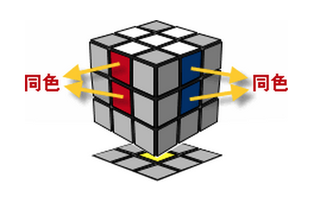
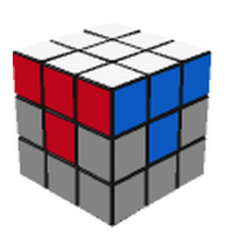
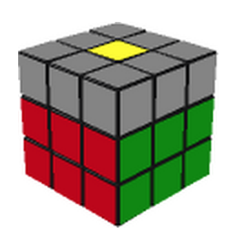
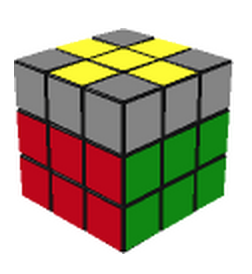
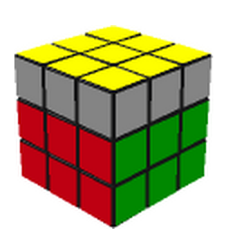
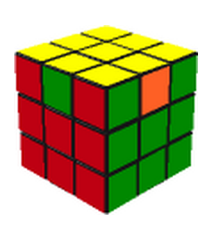
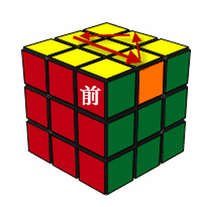

5.55
8.75
21.17
7
20

- 8个角块可以互换位置（8!），也可以旋转（3），但不能单独翻转一个角块，所以总共有8!×38/3种变化状态。
- 12个边块可以互换位置（12!），也可以翻转（2），但不能单独翻转一个边块（也就是将其两个面对调），也不能单独交换两边块的位置，所以总共有12!×212/（2×2）种变化状态。

某些魔方在各个面的图案具有方向性，考虑到6个中心块各有4种朝向，但不能仅仅将一个中心块旋转90度，这时总变化数目还要再乘以46/2。此时结果为：
1个中心轴
6个中心块
12个边块
8个角块








